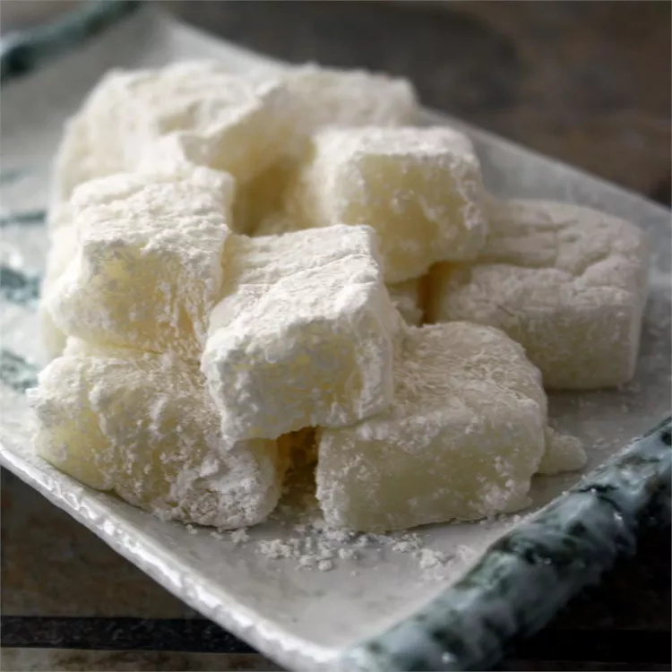

Microwave Mochi
Description
A microwave mochi recipe for this Japanese dessert made with sweet rice flour. More varied and interesting flavors are available as well.
Ingredients
- 1 ½ cups mochiko (glutinous rice flour)
- 1 ½ cups water
- 1 ¼ cups white sugar, divided
- 2 drops distilled white vinegar
- ½ cup potato starch
- ¼ teaspoon salt
Steps
- Mix together mochiko, water, and 1 cup sugar in a medium bowl until well blended. Mix in vinegar to soften. Pour into a microwave-safe dish and loosely cover with plastic wrap. Microwave on high for 8 to 10 minutes. Remove and let cool until cool enough to handle.
- Combine potato starch, remaining 1/4 cup sugar, and salt in a small bowl. Turn mochi out onto the plastic wrap and cut into 25 pieces using a plastic or wooden knife (metal knives tend to stick too much). Roll pieces in the potato starch mixture.